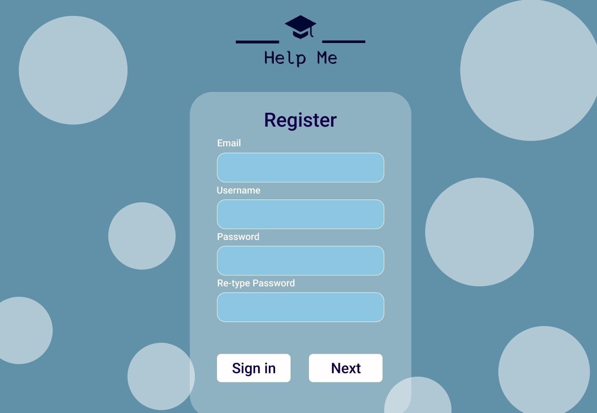
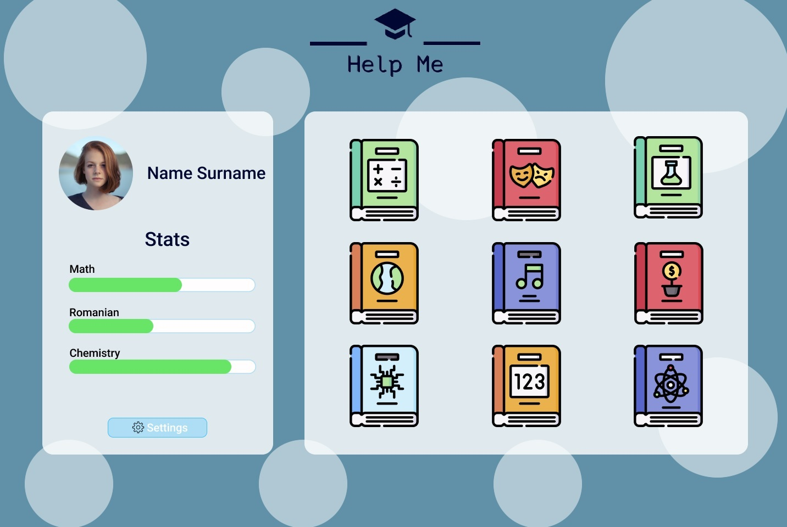
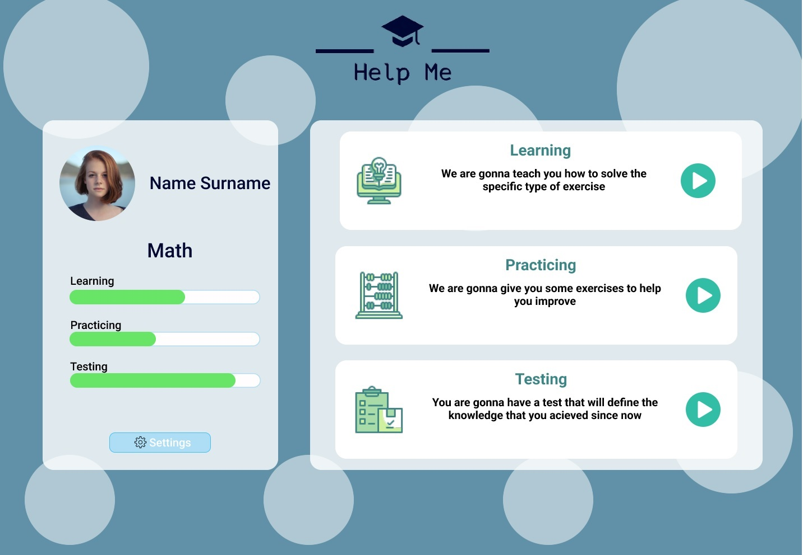
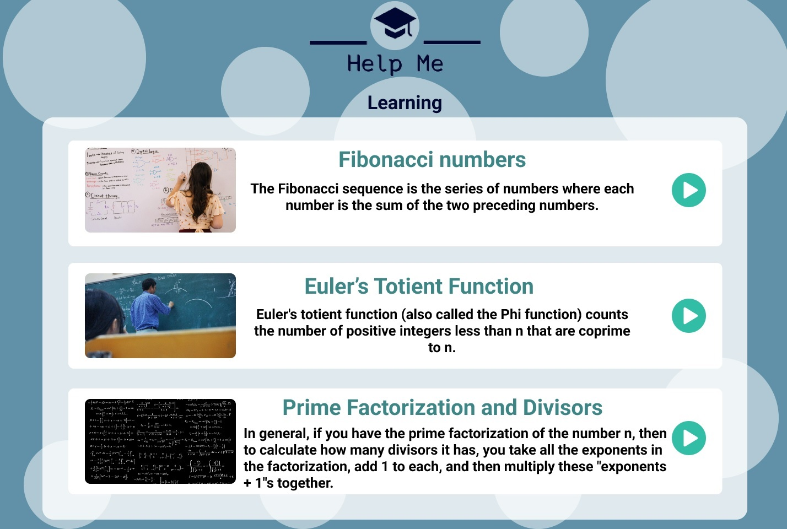

I created a graphical interface for an application that helps students who wants to prepare for exams.
Nowadays, many children do not understand the subjects that they are taught in educational institutions due to their entourage, lack of motivation and the inability of some teachers to teach. Some students seek the help of a meditative teacher, but a lot of them cannot afford it.
These are the main reasons why I created an application to solve this problem. It is a free of charge app, available on the web, that contains videos which will help students learn, exercises that will help them develop their knowledge and a set of tests that will help them evaluate what they have learned ongoing.
The application starts with the home page, from where the user can log in or create an account. After the authentication, he is redirected to the profile page, where he can choose the domain that he wants to study. After choosing it the user will be redirected
to a page where he can choose from learning, exercisesing or testing the knowledge that he aquired in that certain domain that he previously choosed.
The Start page offers the possibility for a existing user to log in.
On this page, the user can create an account by entering personal data such as email, username andss password.
Once the user has logged in, or created their account, they will be redirected to their profile page where they can see their stats and choose the domain that they want to study.
After choosing the domain, the user will choose whether to learn to practice or to test his knowledge
On the learning page the user will select the video with the theme that he understands less
